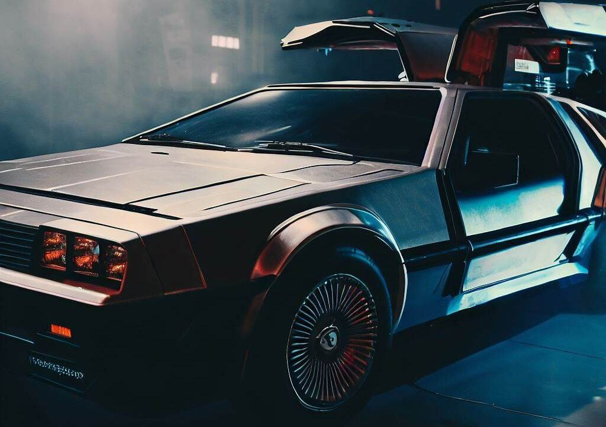

DMC-12 Delorean
Delorean Time Machine
Year 1981
Movies: Back To The Future trilogy
Significance in film: The car is well known from the Back to the future films. From the iconic Flux capacitor to 88 miles per hour, the DeLorean Time Machine is probably the one thing everybody would know even if they haven’t seen the movie. We have both versions of the car.
Versions
The original with the base time machine. Set with a smoke machine, fire effect for the driving. We have set up LED lights for the Flux Capacitor so you can hit 88mph as fast as you can*.
The wild west version with the box setup on the front of it. Pretty much the same as the original but with a rubbish bin at the back.
*WARNING: We do not recommend driving 88 miles per hour unless permitted by road laws. Hollywood Rides and Idiot industries take no legal responsibilities for self-induced, driving related injuries.
